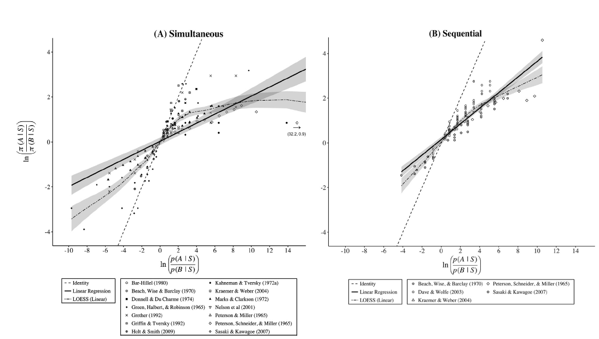

Beliefs (evidence)
Beliefs in Markets and Experiments, Over-/Under-Inference
From Normative to Positive
- Last time we learned how beliefs should update.
- Now, we will learn how human beliefs actually update.
- Lab evidence: bookbags-and-pokerchips paradigm
- Field evidence: betting & forecasting data
- A unifying model: over- vs. under-reaction to information
- Lab evidence: bookbags-and-pokerchips paradigm
Direct Tests – Bookbags and Pokerchips
Experimental setup
- Two bags, each with 100 chips
- Bag A: \(q\)% red, \(1-q\)% blue
- Bag B: \(1-q\)% red, \(q\)% blue
- \(q>0.5\) → red is diagnostic of A
- Bag A: \(q\)% red, \(1-q\)% blue
- Bag A is chosen with probability \(\lambda.\)
- \(n\) draws revealed to participant.
- Task: report \(p\equiv P(\text{Bag}=A\,|\,n\text{ draws}).\)

Many such experiments since the 1960s…
…let’s add another
ADD QR CODE
Meta-analytical Results
Benjamin (2019) provides a meta-analysis summarizing more than 50 years of research.
Meta-analytical Results
- The figure plots participant estimates (y-axis) vs. Bayesian estimates (x-axis).
- Participant estimates are compressed towards their prior.
- This is commonly known as conservatism bias: People revise their beliefs in the correct direction but not far enough.
Limits and Advantages
- The bookbags and pokerchips paradigm allows for a precise comparison of beliefs to a Bayesian benchmark.
- But the beliefs that we are more interested in do not allow for the same, precise comparison:
- Eg., it may be relevant to ask whether financial markets over- or underreact to information, or whether people learn rationally from reading the news. Finding the normative benchmark (how much people should react) is often impossible in these cases.
- But some did still try (next).
Testing Beliefs in the Wild
Challenges when moving outside the lab
- In the lab, we have full control over the signal-generating process. This allows us to compare subjective estimates of \(p\) to the Bayesian estimate.
- In the field, we often do not know the Bayesian estimate, so it is difficult to say how wrong beliefs are.
- But we can test other properties of probability measures. A nice candidate is:
- The Martingale Property
Potential Empirical Setup
- Suppose we can identify an empirical setting with a binary state that can be true or false, \(\small\Omega = \{T,F\}.\) Many potential scenarios:
- Whether the EU lifts sanctions on Russia by 2026.
- Whether inflation will be higher than GDP growth this year.
- Whether LMU admin will go digital by 2035…
Potential Empirical Setup
- Suppose we can identify an empirical setting with a binary state that can be true or false, \(\small\Omega = \{T,F\}.\)
- In such a setting, we could repeatedly ask participants for \(P_t(\omega = T)\) at different \(t,\) denoted as \(p_t.\)
- Or we could simply use betting market data.
- The nice thing when the state is binary is that eliciting \(p_t\) pins down the whole belief distribution: \[ \mu_t(\omega = T) = p_t,\,\mu_t(\omega = F) = 1 - p_t,\, \text{Var}_{\mu_t} = p_t(1-p_t). \]
Potential Empirical Setup
- We can additionally define belief movement and uncertainty reduction between \(t=1\) and \(t=2\).
Definition. Belief movement \(M\) denotes by how much beliefs change between the evaluation periods 1 and 2: \[ M = (p_2 - p_1)^2. \]
Potential Empirical Setup
- We can additionally define belief movement and uncertainty reduction between \(t=1\) and \(t=2\).
Definition. Uncertainty reduction \(R\) denotes the reduction in belief variance between periods 1 and 2: \[ R = p_1(1-p_1) - p_2(1-p_2). \]
The insight of Augenblick and Rabin (QJE, 2021)
A&R observe the following result:
Proposition. If \(\mu_t\) is a probability measure, then \(\mathbb{E}[M] = \mathbb{E}[R].\)
This is a direct consequence of the martingale property.
(Proof on board)
Illustration w/ betting market data
- On the left, belief \(\mu_t(\text{BAR wins})\) starts at >50% and moves towards 100% over time. As beliefs move, uncertainty is reduced…
Illustration w/ betting market data
- On the right, belief starts at <20% and moves to 60% over time. Here, we observe belief movement and an increase in uncertainty.
Illustration w/ betting market data
- The proposition tells us that beliefs should move like the beliefs on the left most of the time.
Illustration w/ betting market data
- While belief uncertainty can increase sometimes, this should be an exception, not the rule.
Testing with real forecasts
- A&R test their predictions:
- Using a panel of experts making probabilistic forecasts.
- E.g., “Will Greece remain a member of the EU through June 2012?”
- Using a baseball prediction algorithm.
- Using sports betting market data.
- Using a panel of experts making probabilistic forecasts.
Testing with real forecasts
- Excess movement is defined as \(M - R.\)
- Experts (Col. 1) overshoot: \(\mathbb E[M]>\mathbb E[R]\) by \(\approx 20\%.\)
Testing with real forecasts
- Algorithm & betting markets (cols 2 + 3) are much closer to Bayesian benchmark.
- But betting market movement still overshoots by \(\approx 4.6\%.\)
A puzzle?
- Lab experiments on bookbags and pokerchips suggest that individual beliefs move too little in response to new information.
- A&R conceive a comparable test to test for belief movements outside the lab. They find that individual forecasters move their predictions by too much.
- We will learn about a unifying explanation next.
Over- vs. underinference
Augenblick, Lazarus, Thaler (QJE, 2025) study why individuals sometimes over- and sometimes underinfer from data.
Idea: Distinguishing good news from bad news is often easy. It is much harder to say how much better one piece of good news is to another piece.
- E.g., beating earnings expectations is good news for a firm’s valuation. But difficult to assess by how much its value should increase.
In other words, a signal’s qualitative valence (\(+\) or \(-\)) is easier to assess than the quantitative size of the signal.
- Idea: Distinguishing good news from bad news is often easy. It is much harder to say how much better one piece of good news is to another piece.
- E.g., beating earnings expectations is good news for a firm’s valuation. But difficult to assess by how much its value should increase.
- In other words, a signal’s qualitative valence (\(+\) or \(-\)) is easier to assess than the quantitative size of the signal.
- \(\rightarrow\) Developing this idea in a model we get overinference from weak signals and underinference from strong signals. (Next)
Setup
- Binary state of the world, \(\omega \in\{H,L\};\) an agent has prior \(P(\omega = H) = \lambda.\)
- The agent receives a signal \(s\in\{g,b\}\) with signal strength \(P(s = g | \omega = H) = P(s=b|\omega=L) = q.\)
- However, the agent does not know \(q\) for sure. They have some idea that the average good signal has a \(q\) distributed according to \(\mathcal{N}(\bar{q}_0, \sigma_0).\)
- Upon observing \(s\), the agent receives an additional signal about the size of \(q\), \(q_s|q \sim \mathcal{N}(q, \sigma_q).\)
Setup
- This setup combines a binary-binary updating model with a normal-normal model.
- The agent receives a binary signal about a binary state.
- They receive a normal signal about the normally distributed signal strength.
- Updating follows a two-step procedure:
- Observe signal valence and estimate signal strength.
- Use the estimated signal strength to update beliefs about the state of the world.
Over- vs. underinference
Proposition. The agent’s estimated signal strength is equal to \[ \bar{q}_1 = \alpha q_s + (1-\alpha)\bar{q}_0,\text{ where }\alpha = \frac{\sigma_0}{\sigma_0 + \sigma_q} \]
This directly follows from the normal-normal model.
Over- vs. underinference
Implication: Individuals overestimate weak signals and they underestimate strong signals.
Over- vs. underinference
Key prediction: Individuals overinfer from weak signals and underinfer from strong signals.
Bookbags & pokerchips revisited
ALT conduct a lab belief updating experiment and find overinference if \(q < 0.6\) and underinference if \(q>0.6.\)
- The y-axis is normalized. y>1 means overinference and y<1 means underinference.- The metastudy by Benjamin (2019) we saw earlier could not find this as all experiments it considered had \(q\geq 0.6\)!
Betting-market evidence
ALT also aim for a test of reactions towards weak and strong signals in sports betting and financial markets.
They propose that, in sports, news that are revealed early in the game are less informative about the game outcome than equivalent news revealed later.
- E.g., in football, scoring the first goal in min. 1 is less informative than scoring the first goal in min. 89.
Based on this, they predict that belief movement > uncertainty reduction early in the game and belief movement < uncertainty reduction late in the game.
Betting-market evidence
- Markets move too much early, too little late.
- Similar for long- vs. short-maturity stock options.
Takeaways
- Lab tests (bookbags & pokerchips) → conservatism on average.
- Field tests (forecast panels, betting) → excess belief movement.
- Aggregation in markets partly corrects individual biases.
- A unified view: People find it easier to judge the valence than the size of a signal. ⇒ they over-react to weak and under-react to strong information.